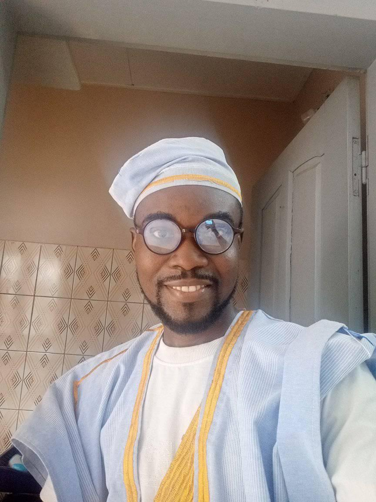

Je m'appelle Guelable Salomon. Le 11 novembre 2012, je me suis fait baptiser comme Témoin de Jéhovah. À ce moment-là, j’étais convaincu d’avoir trouvé la vérité. Pour moi, il ne faisait aucun doute : j’appartenais à la seule organisation que Dieu utilisait sur la terre.
Comme beaucoup de jeunes croyants sincères, j’étais rempli de zèle. Je voulais faire toujours plus pour Dieu. Servir, prêcher, étudier… toute ma vie tournait autour de cela.
Puis, en 2014, une chose extraordinaire est arrivée : j’ai été invité à servir au Béthel.
Pour un Témoin de Jéhovah, servir au Béthel est un immense privilège. C’est le centre administratif de l’organisation. Beaucoup le considèrent comme l’endroit le plus spirituel sur terre.
Je pensais être arrivé au sommet de ma vie spirituelle.
Je ne savais pas encore qu’un jour, une simple vidéo sur Internet allait faire s’effondrer tout ce que je croyais savoir.
Un jour, alors que je naviguais sur YouTube, une vidéo est apparue dans mes recommandations.
Le titre disait :
« Témoins de Jéhovah vs Commission Royale Australienne »
Instantanément, une alarme s’est déclenchée dans mon esprit.
Dans l’organisation, on nous répète sans cesse : « N’écoutez jamais les apostats. Ne regardez pas leurs vidéos. »
Je me suis donc dit : « Non… je ne dois pas cliquer. »
Et il y avait une autre raison.
Au Béthel, l’historique des ordinateurs est régulièrement vérifié par le département informatique. Regarder ce genre de contenu pouvait attirer l’attention.
J’ai donc ignoré la vidéo… et je suis passé à autre chose.
Mais le soir, une fois rentré chez moi, la même vidéo est réapparue dans mes recommandations YouTube sur mon telephone personnel.
Cette fois, j’ai hésité quelques secondes.
Puis je me suis dit :
« Bon… je vais juste regarder quelques minutes. »
Je ne savais pas que ces quelques minutes allaient changer ma vie.
La vidéo montrait Geoffrey Jackson, membre du Collège Central des Témoins de Jéhovah, répondant aux questions d’un avocat devant une commission royale en Australie.
Au début, j’étais même impressionné.
Je me disais :
« Il répond vraiment bien… il défend l’organisation. »
Puis l’avocat lui a posé une question simple… mais extrêmement importante.
« Considérez-vous que le Collège Central est le seul porte-parole de Dieu sur terre aujourd’hui ? »
Je me suis redressé sur ma chaise.
C’était LA question.
Toute notre foi repose sur cette idée : que le Collège Central est le canal choisi par Dieu.
Alors j’ai attendu la réponse avec confiance.
Et puis Geoffrey Jackson a répondu :
« Il serait présomptueux de dire cela. »
Je suis resté figé.
Je me suis dit :
« Attends… quoi ? »
J’ai immédiatement mis la vidéo en pause.
Une pensée a traversé mon esprit :
« Cette vidéo doit être un montage. Ce n’est pas possible. »
J’ai commencé à faire des recherches pour vérifier si cette audience était réelle.
Et là… j’ai découvert quelque chose qui m’a profondément troublé.
Tout était vrai.
La commission existait vraiment.
L’audience était officielle.
Et les vidéos provenaient directement des enregistrements du tribunal australien.
Ce n’était pas une vidéo d’apostats.
C’était la réalité.
Le lendemain, j’ai montré la vidéo à certains collègues au Béthel.
Je pensais qu’ils seraient aussi surpris que moi.
Mais leur réaction a été très différente.
Ils m’ont immédiatement dit :
« C’est de l’apostasie. Tu n’aurais jamais dû regarder ça. »
On m’a même conseillé de ne plus jamais chercher d’informations sur Internet concernant l’organisation, sauf sur le site officiel JW.org.
Mais à ce moment-là, quelque chose avait déjà changé en moi.
Une question s’était installée dans mon esprit.
Et cette question refusait de disparaître.
Quelques mois plus tard, une autre affaire judiciaire a attiré mon attention : le procès des Témoins de Jéhovah en Norvège.
Sur JW.org, les informations étaient très limitées.
Mais je voulais comprendre ce qui se passait réellement.
Alors j’ai recommencé à chercher des informations sur Internet.
Et j’ai découvert toute l’histoire.
La Norvège n’interdisait pas les activités religieuses des Témoins de Jéhovah.
Il s’agissait principalement d’une question de subventions financières accordées par l’État.
Je me suis alors posé une question simple :
Pourquoi l’organisation se bat-elle autant pour l’argent des gouvernements, alors qu’elle prêche la neutralité politique ?
Et une autre question encore plus troublante :
Pourquoi les membres du monde entier ne sont-ils jamais informés de ces financements ?
Les questions se multipliaient dans mon esprit.
Le véritable point de rupture est arrivé lors de l’assemblée annuelle de 2023.
Ce jour-là, Geoffrey Winder membre du Collège Central des Témoins de Jéhovah a déclaré dans un discours que le Collège Central n'est pas obligé de s’excuser si certaines compréhensions doctrinales étaient incorrectes dans le passé.
Quand j’ai entendu cela… quelque chose s’est brisé en moi.
Je me suis dit :
« Donc ils peuvent se tromper… mais ils n’ont même pas besoin de s’excuser ? »
À cet instant précis, j’ai compris que je ne pouvais plus suivre aveuglément ces gens avec leur enseignements.
Je devais chercher LA vérité par moi-même.
Depuis ce jour j'ai alors entrepris d'etudier la bible de moi meme, sans passer par une quelconque publication de la watchtower. Et petit à petit je decouvre les erreurs grave dans les doctrines des Temoins de Jehovah ainsi que la manipulation qui va avec. J’ai alors écrit une longue lettre au collège des anciens.
Dans cette lettre, j’expliquais pourquoi plusieurs doctrines me semblaient erronées : 1914, la doctrine du sang, les 144 000, l’interdiction des fêtes et d’autres enseignements.
Je leur ai demandé d’examiner mes arguments honnêtement.
Mais au lieu d’en discuter avec moi…
Ils ont immédiatement contacté le surveillant de circonscription.
Ma lettre a été qualifiée d’« apostasie ».
Sans même organiser une réunion pour examiner mes arguments, les anciens ont recommandé ma destitution comme ancien.
La décision a été approuvée.
On m’a simplement informé que je n’étais plus ancien.
Aucune discussion.
Aucune analyse.
Juste une décision.
Finalement, le 17 juin 2024, j’ai envoyé une seconde lettre déclarant officiellement que je ne faisais plus partie des Témoins de Jéhovah.
C’était une décision difficile.
Mais c’était aussi le début d’une nouvelle liberté.
Aujourd’hui, je partage mon histoire pour une raison simple :
Personne ne devrait avoir peur de poser des questions.
Chercher la vérité ne devrait jamais être considéré comme un crime.
Partage ton témoignage et aide d'autres personnes.